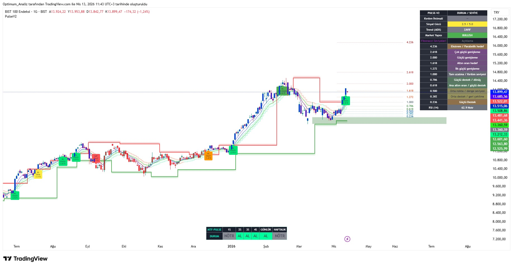
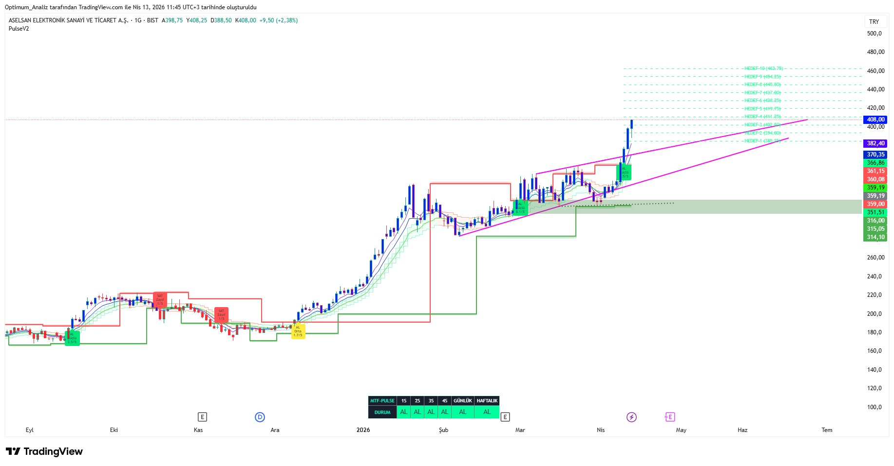

Gelişmiş Kırılım Tespiti • Puanlama Sistemi • Momentum Analizi
PULSE Sistem (PulseV2), güçlü kırılım tespiti, akıllı puanlama sistemi ve momentum analizi üzerine kurulu modern bir trading indikatörüdür.
Direnç ve destek seviyelerini dinamik olarak takip eder, HACİM, RSI, ADX, MACD gibi faktörleri değerlendirerek sinyal kalitesini 5 üzerinden puanlar.
Pivot noktaları ve Donchian kanalları kullanarak dinamik direnç/destek seviyeleri belirler. Fiyat bu seviyeleri belirli bir yüzdeyle kırdığında sinyal adayı oluşur.
Her sinyal için hacim artışı, RSI durumu, momentum, ADX ve MACD gibi faktörler değerlendirilir ve **5.0** üzerinden puan verilir.
Direnç ve destek neon gölgelerle gösterilir, kırılım sonrası mumlar renklendirilir, ATR veya FİBO bazlı hedef seviyeleri otomatik çizilir.

PULSE Sistem - Kırılım Sinyali, Puanlama Sistemi ve Neon Görselleştirme

PULSE Sistem - Gerçek Zamanlı Analiz Paneli ve MTF Bias Gösterimi
Bu indikatör invite-only olarak TradingView’de yayınlanmaktadır.
Erişim talebi için: